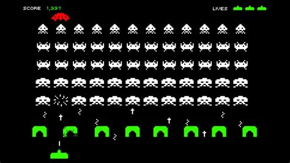
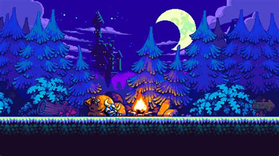

The Start (late 1970s and early 1980s)
Pixel art is a digital art style that uses small, square pixels as the building blocks of an image. It became prominent in the late 1970s and early 1980s, coinciding with the rise of personal computers and arcade machines. Limited hardware meant graphics had to be simple, with each pixel carefully placed to form recognizable shapes and characters. Early examples of pixel art can be seen in games like Space Invaders (1978) and Pac-Man (1980), where designers had to work within tight resolutions and color palettes. As technology improved in the 1980s, home consoles like the Nintendo Entertainment System (NES) and Sega Master System pushed pixel art forward. Games like Super Mario Bros. (1985) and The Legend of Zelda (1986) showcased more detailed characters, animations, and environments while still relying on the pixelated style. Developers used clever shading and dithering techniques to create the illusion of depth and texture, making pixel art increasingly sophisticated despite hardware constraints. The 16-bit era of the late 1980s and early 1990s, led by the Super Nintendo (SNES) and Sega Genesis, marked a golden age for pixel art. Higher resolutions and expanded color palettes allowed for more intricate sprites and backgrounds, seen in games like Chrono Trigger (1995) and Street Fighter II (1991). Hand-drawn pixel animations became more fluid, giving characters expressive movements that defined an entire generation of gaming. However, the mid-to-late 1990s saw the decline of pixel art as gaming shifted toward 3D graphics. 
With the rise of consoles like the PlayStation and Nintendo 64, developers prioritized polygonal models over 2D sprites. While some games continued using pixel art, particularly in handheld consoles like the Game Boy Advance, it became less common in mainstream gaming as companies pursued more realistic visuals. Despite its decline in the industry, pixel art experienced a revival in the 2000s and beyond, thanks to indie developers and nostalgia-driven projects. Games like Cave Story (2004) and Shovel Knight (2014) proved that pixel art could still be relevant, offering a blend of retro aesthetics and modern gameplay innovations. The accessibility of game development tools also allowed more artists to experiment with pixel art, leading to a resurgence in popularity. Today, pixel art remains a beloved style, not just for its nostalgic appeal but also for its artistic versatility. It thrives in indie games, mobile applications, and even modern animated projects, proving that even in an age of high-resolution 3D graphics, the charm and craftsmanship of pixel art continue to captivate audiences worldwide. 